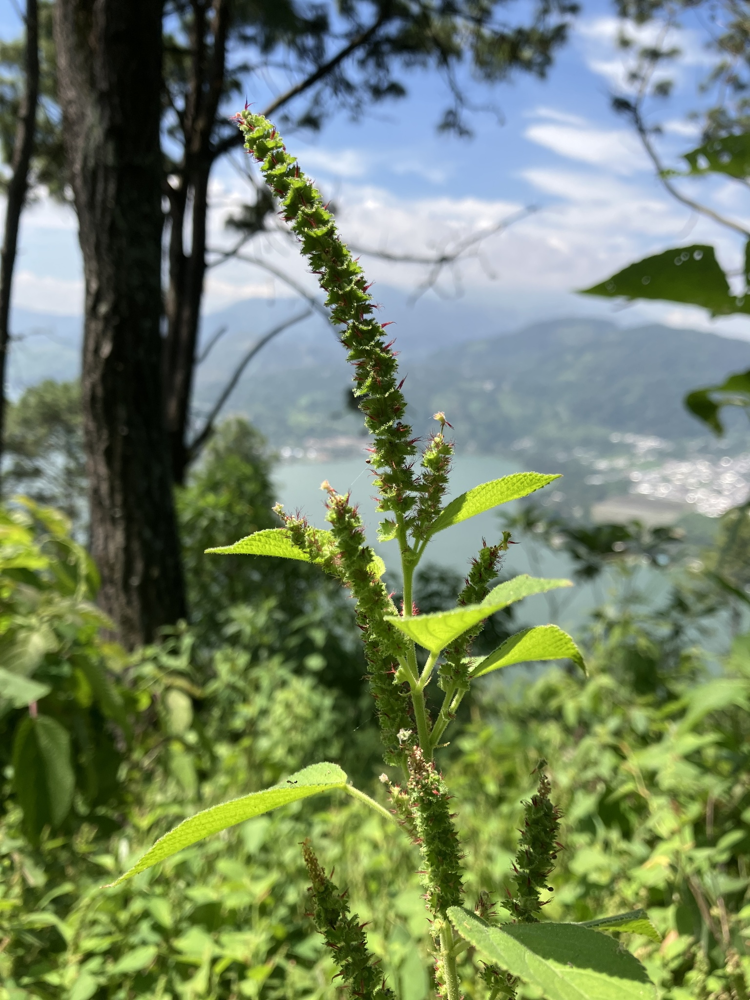
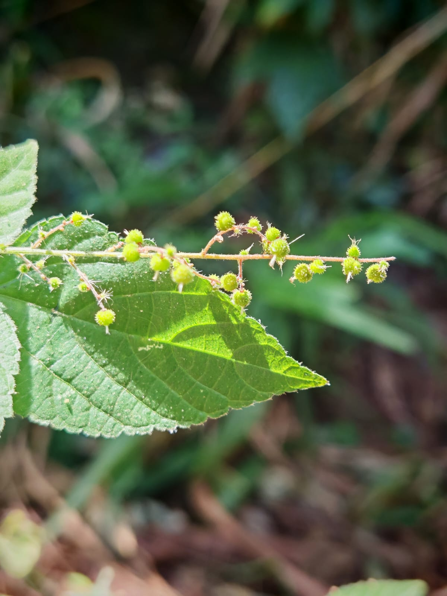
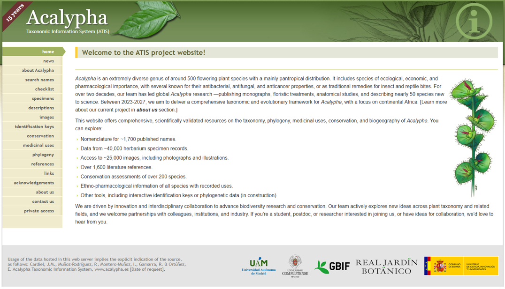

The Genus Acalypha
Acalypha L. is a diverse and widespread genus of flowering plants in the family Euphorbiaceae, comprising nearly 500 species distributed across tropical and subtropical regions worldwide. The genus is characterised by its herbaceous, shrubby, or sometimes small tree-like growth forms, often with serrated leaves and inconspicuous flowers grouped in catkin-like inflorescences.
Acalypha species thrive in various habitats, including rainforests, dry woodlands, and disturbed areas, demonstrating remarkable ecological adaptability. Some species are cultivated as ornamentals for their striking foliage and unique inflorescences, while others play essential roles in local ecosystems.
Beyond their ecological significance, Acalypha species have garnered increasing attention for their ethnobotanical and pharmacological potential. Dozens of species have been traditionally used in folk medicine across the world for treating skin conditions, respiratory ailments, and inflammatory disorders.


The ACALPHARMA Project
Taxonomy is often perceived as an old-fashioned, merely descriptive science. It is sometimes seen as no longer necessary, but evidence shows the opposite: taxonomy is now more necessary than ever before. We now accumulate data at rates never seen, but the lack of taxonomic expertise and intense data curation makes identification errors widespread.
In 2023, we secured funding from the Spanish Ministry of Science and Innovation to conduct a global-scale study of Acalypha, with special attention to the species in Africa. Our aim is both to improve taxonomic knowledge of Acalypha species and to investigate the origin and evolution of the species known to produce chemical substances of medicinal and pharmacological interest.
Acalypha Taxonomic Information System
The Acalypha Taxonomic Information System is an online resource dedicated to the genus Acalypha via www.acalypha.es. It offers:
- Nomenclature for ~1,700 published names
- Data from ~40,000 herbarium specimen records
- Access to ~25,000 images, including photographs and illustrations
- Over 1,600 literature references
- Conservation assessments of over 200 species
- Ethno-pharmacological information of all species with recorded uses
